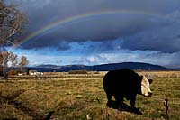
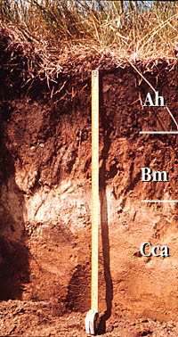

|
|

|

|

|
|

The Prairies: TodayThe landscape we see today has strongly been altered by human activity. The tall grass prairie now produces corn; wheat grows on the semi-arid mixed prairie; cattle have replaced the bison of the more arid regions; and the aspen parkland and parts of the mixed woods zones have been cleared, with fields of canola, cereal grains and forage crops most common today.
|

Soils are alive, often containing more weight of living matter (biomass) than above the ground. As plants die, the decomposition process begins. Plant residues feed earthworms and other small animals in the soil. Microorganisms complete the process, releasing nutrients from plant residues into the soil, making them available for the next generation of plants. Some bacteria and fungi living on or near roots help plants obtain nitrogen from the atmosphere, while others release nutrients and minerals.
Productive soils provide good rooting space, are adequately supplied with water, air and nutrients and are self-cleansing, preventing the build-up of harmful elements.
|

Grassland soils are fertile, with thick surface horizons that are rich in organic matter and nutrients. The black soils of sub-humid regions are especially productive. Soils found under forests and in more moist climates in the northern part of the Plains are less suitable for agriculture. They have less organic matter, are more acidic and contain fewer nutrients.
Soils formed in grasslands are different from forest soils. The upper part of the Dark Brown grassland soil is enriched in organic matter resulting from the decomposition of the many fine roots of the grass vegetation. This fertile soil has reserves of organic nutrients such as nitrogen, phosphorus and sulfur, and a high content of mineral nutrients such as potassium.
The build-up of litter-fall from forest vegetation forms the organic layer on the surface of the Gray Luvisol soils. The gray upper mineral soil has a low organic matter and nutrient content. The brownish horizon contains clay minerals that have been moved downwards by intense leaching under acidic conditions. |
Early advances in agriculture, such as better seeds, livestock and improved implements, were made mainly by farmers. Agriculture science began in 1700s, and involved scientists who applied the natural sciences to agriculture. Today, science helps to develop better crops and livestock, improved management systems and new ways to use agricultural products.
The Industrial Revolution caused widespread changes to the western world. Improved farm machinery and agricultural techniques boosted food production needed to feed the burgeoning city populations. Many people left the land to work in the new factories.
Modern scientists use sophisticated instruments and computers. Advanced technology permits a large number of increasingly detailed analyses. Computers linked to instruments receive the initial data, do the complex calculations and display output on video screens, or as printed output.
Saskatchewan developed as an agricultural province, and today it is still the economic base for the province's towns and villages. Agriculture remains Saskatchewan's most important industry, providing 20% of the gross domestic product (GDP), directly employing 20% of the total work force, and indirectly employing many more people. |
Agriculture is an important source of raw materials for many manufacturing industries, and in turn is an important market for goods manufactured in Saskatchewan. Efforts continue to diversify agriculture by:
- introducing new crops
- expanding livestock, poultry and dairy production
- developing local industries to process agricultural products.
|
|
|
|
|